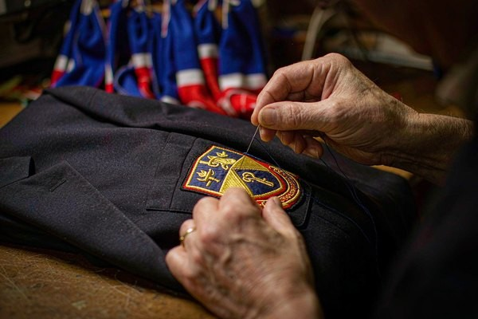

School & University Patches: Academic Pride Woven In
A campus runs on belonging — to a house, a team, a society, a class year. School and university patches are the smallest unit of that belonging: a crest on a blazer, a class year on a sleeve, an honor society key on a jacket. This guide maps out who uses what across a campus, the design rules that keep a crest looking like an institution instead of a sticker, placement and attachment by garment, and the academic-calendar rhythm that keeps ordering painless.
Why Patches Endure on Campus
Universities are the oldest branding organizations in the Western world — the academic dress tradition dates back to medieval clerical robes, and the crest embroidered on a modern graduate's gown descends directly from the coats of arms those institutions adopted centuries ago. That lineage explains why a patch reads differently on campus than anywhere else: stitched onto wool, a crest does not look like merchandise. It looks like membership in something older than its wearer.
The economics reinforce the tradition. A school crest gets ordered once, digitized once, and then reproduces for decades of students — the lowest-friction branding any institution ever runs. And the pieces themselves outlive the students: class year patches migrate onto backpacks and alumni jackets, society keys get sewn onto blazers worn at reunions twenty years on. Few campus purchases survive graduation; patches are the main exception.
Who Uses What Across a Campus
A single institution can run a dozen patch programs in parallel, each with different buyers and rhythms:
- Schools and academies. The core uniform crest — one design, deep stock, applied to blazers, sweaters and shirts. Many K-12 schools add house or color-team patches that turn sorting new students into a small ceremony.
- Clubs and societies. Debate, robotics, drama, cultural societies — each wants its own mark at modest quantity. This is the segment where no-minimum ordering matters most, because a club's entire membership can be forty people.
- Honor societies. Keys, laurels and Greek letters with strict official artwork; these groups care more about fidelity to their approved emblem than any other buyer. The honor society tradition of visible recognition is exactly what the patch formalizes.
- Athletics. Team crests, letterman-sleeve marks and championship patches — the conventions are covered in our sports team patches guide, and they transfer directly.
- Greek life. Fraternities and sororities order Greek-letter patches for chapter jerseys and formal wear, plus legacy pieces for seniors.
- Admissions and events. Orientation kits, open-day giveaways and anniversary crests — closer to the event-market logic described in our event patches guide, where the goal is a keepsake students actually keep.
Design Rules That Keep a Crest Looking Institutional
Academic crests follow the heraldic playbook, and the constraints that keep them dignified are worth stating plainly:
- Shield or roundel first. The classic crest shapes carry centuries of association; free-form silhouettes read as club merchandise. Reserve novelty shapes for spirit-wear, where playfulness is the point.
- Two to four colors from the official palette. Every institution has defined colors — request their codes and match them exactly. A crest in almost-the-right blue reads as counterfeit to the people who wear it daily.
- Motto text sized honestly. Latin mottos on banners around a shield need letters at least 4 mm tall; the legibility math is the same as in our text legibility guide. If the motto cannot stitch legibly at the chosen size, drop it rather than shrink it.
- Class years as a separate element. Put the year on its own small bar or chevron patch instead of stitching it into the crest. The crest file then never changes, and each class orders its own year mark — cheaper every single year.
- Woven for detail, embroidered for weight. Dense seals with fine line work reproduce better as woven patches; the construction trade-offs are the same ones that govern corporate logo programs, and the same logic applies to institutional seals.
Placement by Garment
Campus garments range from formal blazers to rugby shirts, and the placement conventions follow the garment's formality:
| Garment | Standard Position | Typical Size |
|---|---|---|
| Blazer / formal jacket | Top-left pocket or left chest | 2.5–3.5 in |
| Sweater / cardigan | Left chest | 2.5–3 in |
| Shirt / polo | Left chest, above pocket | 2–2.5 in |
| Letterman jacket | Left sleeve (letters) or back (large marks) | 3–4 in |
| Cap / beanie | Front panel | 1.5–2 in |
| Graduation gown / hood | Chest crest per institutional spec | 2.5–3 in |
When the school already wears a crest, match its position exactly — a new supplier's patch sitting half an inch off from last year's is noticed by every student who owns both. Caps follow their own front-panel logic, worth reading up on before ordering headwear.
Backings for Student Life
Student garments get washed hard, inherited, and sometimes decorated by the students themselves, so the backing choice varies by use:
| Backing | Campus Fit |
|---|---|
| Sew-on | Blazers, sweaters and gowns — survives years of washing and dry cleaning |
| Iron-on | Spirit-wear, tote bags and self-decoration kits students apply at events |
| Hook-and-loop | Club vests, event staff gear and collector displays where badges swap |
| Adhesive | One-day orientation events only — not for anything that gets worn twice |
The full trade-off analysis lives in our backing types guide. For uniform crests the honest default is sew-on, applied when the garment is issued or altered — campus tailors and uniform shops usually do it for a small fee.

Ordering on the Academic Calendar
The campus year has a fixed rhythm, and patch ordering goes smoothly when it follows that rhythm instead of fighting it:
- Summer (June–August): uniform crests. Order the core crest before term starts, when the uniform shop assembles new-student packages. This is the deep-stock order of the year.
- Autumn (September–October): clubs and orientation. Club recruitment week drives a wave of small, varied orders — the moment no-minimum production earns its keep, since forty-member clubs order forty patches, not a case.
- Winter: honor societies and greek life. Induction ceremonies in the winter term need society keys and formal marks; order six to eight weeks ahead of the ceremony date.
- Spring (March–June): class years and commencement. Graduation season produces class year patches, gift crests and alumni-souvenir runs — the year's second-largest wave.
Two habits keep every wave cheap. First, keep one master file per institution — crest, house marks and year bars all digitize from the same base, so a new variant never restarts setup. Second, treat the class year as an annual add-on rather than a redesign: the crest stays constant, the year bar changes, and no minimum order means each class buys exactly its own count.
Frequently Asked Questions (FAQ)
Q1: What size should a school crest patch be?
Blazer and sweater crests run 2.5 to 3.5 inches, cap marks 1.5 to 2 inches, and club or honor society badges 2 to 3 inches. Match the size already used on existing uniforms first — consistency across a class or team matters more than any single number.
Q2: Can we order patches with our official school seal or crest?
Yes — most schools and universities own or license their marks, and we reproduce supplied artwork as-is. Confirm the institution's policy on using its seal before ordering, since that authorization sits with the school, not the manufacturer.
Q3: What is the best backing for student patches?
Sew-on for blazers, sweaters and letterman jackets that live through many wash cycles. Iron-on works for spirit-wear and items students decorate themselves. Hook-and-loop suits club vests and event gear where badges swap between activities.
Q4: How do we handle class year patches each graduation?
Treat the crest as a permanent master file and the class year as a small annual add-on order. Because there is no minimum order, each graduating class can order exactly its own quantity, and the digitized files stay on record for next year's run.
Q5: Woven or embroidered patches for school crests?
Embroidered for classic blazer crests and letterman sleeves — the texture reads as tradition. Woven suits detailed seals with motto text or small lettering that embroidery would blur. Many schools use embroidered crests plus woven club and honor society badges.
Conclusion: The Smallest Piece of Institutional Memory
School and university patches do something no campus merchandise category manages as well: they turn an institution's identity into something a student can wear through a lecture, a ceremony and twenty years of reunions. Keep the crest heraldic and honest, split class years into their own small orders, place every patch identically across a cohort, and follow the academic calendar for ordering. Do that, and the crest costs less every year while meaning more — which is the only direction a tradition should move.
Send us your institution's crest, seal or a photo of an existing uniform, and we will redraw it vector-clean, match your official colors, and return a proof within 12 hours. No minimum order — from a forty-member club to a full incoming class. Request a free quote and put the crest where generations have worn it.